Quantomatic
Quantomatic is a tool (or really, a collection of tools) that provides machine-support for reasoning with diagrammatic languages, which is an area of active research (check out some of our papers). The main tool QuantoDerive is a derivation editor. It allows users to draw diagrams and build up proofs using graph rewrite rules. It's easier to show you what that means than to tell you, so download it try it out!
Download for OS X
Download for Linux
Download for Windows
GitHub Project »
Sample projects
After installing Quantomatic, you can check out the following two sample projects.
The first one contains a Quantomatic project on bialgebras. It includes the necessary axioms, a simplification procedure which always produces unique normal forms and a sample graph with a derivation.
Download zip
Clone from GitHub »
The second one is a Quantomatic project which contains all of the ZX-calculus axioms and some useful theorems and simplification procedures. It also includes sample graphs and derivations.
Download zip
Clone from GitHub »
Quick Start
Setup
The only thing you will need to have installed is the Java Runtime version 6 or later (which is also sometimes called version 1.6). Older versions of OS X come with Java pre-loaded, but for Lion or later, you will need to install it yourself. On Linux, you should be able to install Java using your package manager. To confirm it is set up correctly, check the output of java -version from the terminal.
For OS X: download the OS X bundle above and extract it. The first time you run the Mac app on OS X Lion or later, you may need to run it by right-clicking, and clicking on Open, at which point it will complain about coming from an unknown developer. Allow it to open, and you should be able to run it as usual from then on.
For Linux: download the Linux bundle above, extract anywhere, and run quanto-derive.sh, either from the terminal or by double-clicking it in your file browser.
For Windows: download the Windows installer and double-click it to install. On Windows 8, SmartScreen will complain if it's enabled. Just click More Info > Run anyway. For rewriting, QuantoDerive connects to poly.exe via a local port, so you may have to allow poly to access the internet in your firewall settings.
From source: To build QuantoDerive from source, you will need: a recent JDK (>= 6), standard GNU developer tools (make, gcc, etc.), git, sbt, and Poly/ML. You will then need to clone Quantomatic, build the Quantomatic core using the Makefile, and build/run the frontend using sbt.
git clone git://github.com/Quantomatic/quantomatic.git -b integration
cd quantomatic/core
make
cd ../scala
sbt run
You will see a number of options once sbt run is complete. Choose QuantoDerive to get the main GUI. For scala development in Intellij IDEA, create a project with sbt gen-idea. Some Poly/ML editing support is available for Sublime Text 2/3, vim, and JEdit.
A ten-minute tutorial...with pictures!
To start experimenting with QuantoDerive, download the sample project and unzip it somewhere on your computer. Alternatively, if you are accustomed to working with git, you can clone it from GitHub.
Download zip
Clone from GitHub »
Once you clone (or download and unzip) the sample project, open it in QuantoDerive with File > Open Project... by selecting (or navigating to) the directory in the file browser and clicking Open. At this point, you should be seeing something like this:
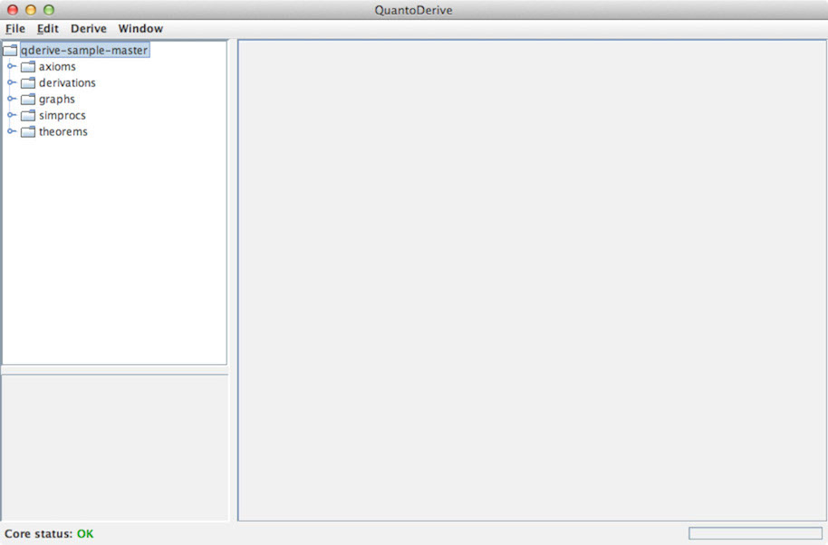
Graph editing
Expand the graphs folder on the right and double-click sample.qgraph. This will open the graph editor:
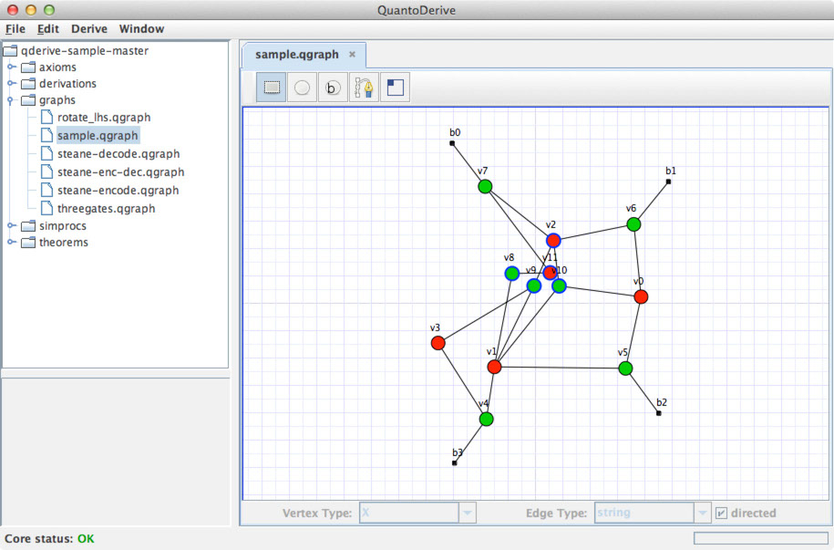
Pretty standard stuff here. Drag nodes around, copy and paste, etc. Use the = and - keys to zoom in and out. Double-click nodes (or edges) to edit data. One handy trick is to let QuantoDerive do some automatic layout for you. Notice how there are a bunch of nodes clustered up in a particularly unhelpful way in the above graph? Try selecting them and holding down the R key to relax the node positions:
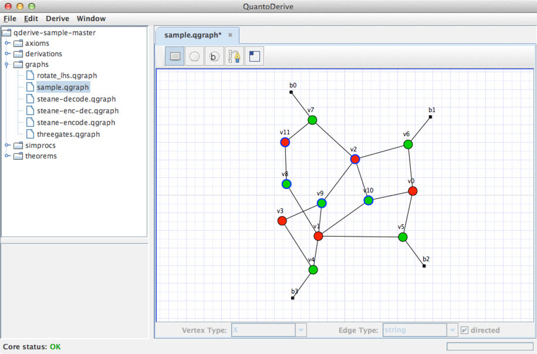
That's better! Next, have a look at the tools we have available:

From left-to-right, these are: Select, Add Vertex, Add Boundary, Add Edge, and Edit !-Boxes. We have already been using the Select tool, so click on the Add Vertex tool. Notice now the vertex types at the bottom of the screen is now enabled. Pick a vertex type:
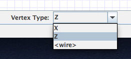
Since the sample project is set up for the ZX-calculus, the available types are well...Z and X. We'll ignore the <wire> type for now. Once a type is selected, clicking on the screen will add vertices of that type.
Similar to the vertex tool is the boundary tool. These create dummy vertices which serve as free edges, or boundaries to a graph. These are important for creating rules. Note that these don't become proper inputs/outputs until we connect some edges to them. To do that, try out the edge tool:
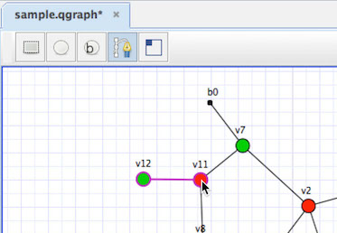
Edges are created by clicking and dragging from one vertex to another. They can either be directed or undirected, which is set by the checkbox in the lower-right corner. Some theories can have multiple types of edges, which you can pick from the Edge Type drop-down, but the ZX-calculus only allows one edge type, so no need to mess with it.
The tool that needs the most explanation is the Edit !-Box tool. !-boxes (or "bang-boxes") allow you to mark sub-graphs that can be repeated any number of times. With the !-box tool selected, click and drag around some vertices to create a new !-box:
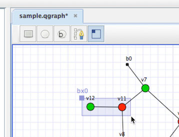
To add are remove nodes from a !-box, click and drag from upper-left corner of the !-box to the thing you want to add/remove. This also works for other !-boxes. To nest one !-box inside another, click and drag from the parent's corner to the child's:
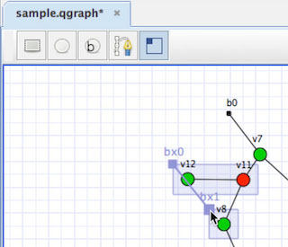
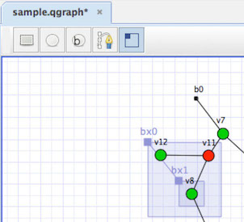
Just like with nodes, repeating the process will remove the child !-box from the parent. QuantoDerive tries its best to only draw !-boxes around nodes that are actually inside that !-box, but sometimes things can go wrong. For example, if a vertex ends up between two vertices that are both in a !-box bx0, it might appear to be in bx0 as well. This can get confusing, so QuantoDerive tries to help you out:
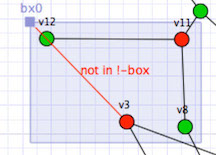
The node v3 above is not actually in bx0, so QuantoDerive is giving you a (not-so-subtle) hint to move it somewhere else.
Rule editing
Rule editing is similar, except now we work with two graphs side-by-side:
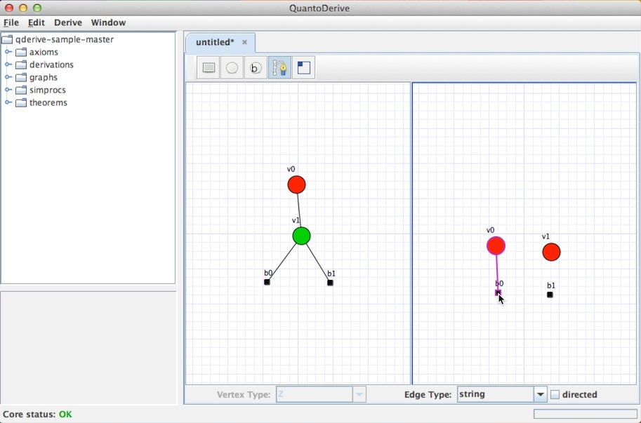
Here, the blue outline is handy because it shows which graph has the keyboard focus, e.g. for copy-and-paste and R. To make a valid rule, the LHS and RHS should have identical boundaries and !-boxes. Not only should the numbers match, but also the labels. For example, in the rule above, both sides have two boundary vertices, labelled b0 and b1.
Rules are created by selecting File > New Axiom. Soon, you will also be able to create rules from derivations, i.e. theorems.
Starting a derivation
To start a new derivation, open a graph that will serve as a starting point, and select Derive > Start derivation.
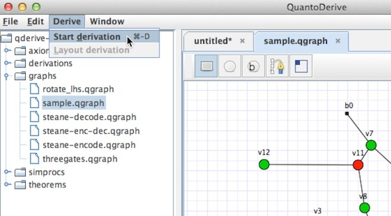
This opens up the derivation editor. Nothing is happening yet because no rules have been added. Click the + button in the Rewrite pane to add some rules.
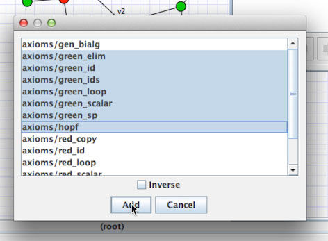
I usually add all of them because...why not? As soon as you add some rules, QuantoDerive will start eagerly searching for matchings:
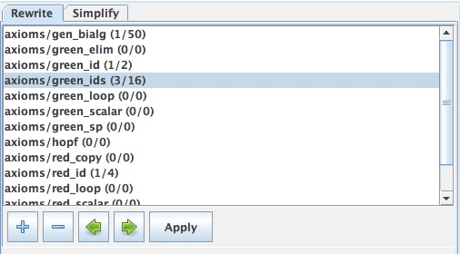
The more cores your computer has, the more fun this part is! Currently, QuantoDerive will find up to 50 matchings for each rule, which you can browse through using the left and right arrow buttons. Also note that selecting subgraphs on the left will refine the search. One you find the rewrite you want, click Apply. This will create a proof step, which you can view at any time by clicking on it in the history view:
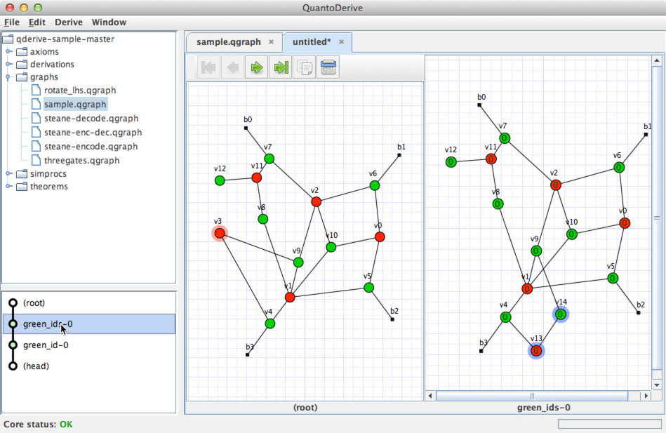
The piece of graph that was removed is highlighted on the LHS, while the new piece of graph that was added is shown on the RHS. Rewriting always takes place at the end of a chain of rewrite steps, which is called a proof head. The derivation editor is designed so that you can try rules out, and if they don't work, you can back up and try other things without ever losing your work. This means that histories can branch and have multiple heads. To create a new head, click a rewrite step somewhere in the path, and click the New Proof Head button in the toolbar:
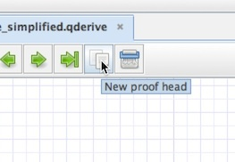
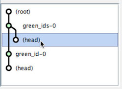
Using the simplifier
When you are tired of applying rewrites one at a time, click on a proof head, and switch over the the simplify panel. Notice there isn't a whole lot to see. That's because we haven't loaded any simplification procedures, aka simprocs yet. These are little pieces of code that define a simplification strategy. On the left, open the simprocs folder and double-click basic_simp.ML:
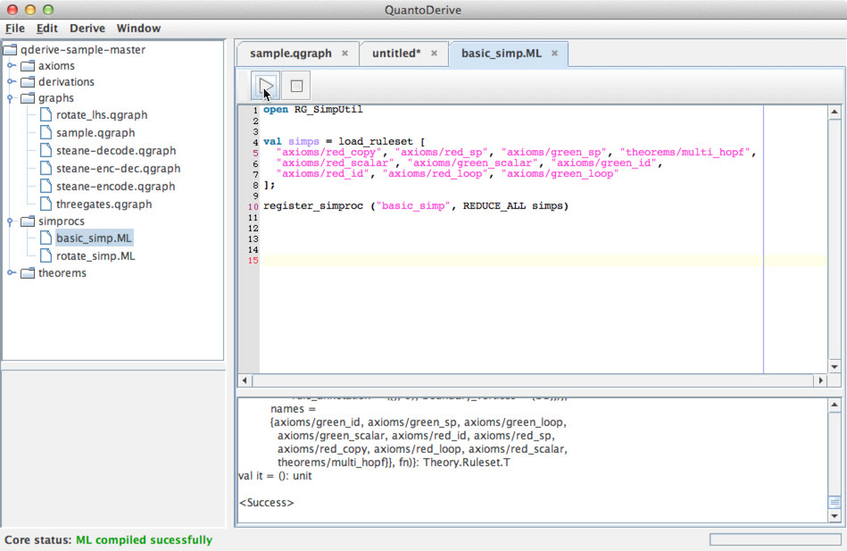
This one's as basic as they come. It loads a some rules from the project into a list called simps, then it will try to apply rules from simps until either it runs out of rules to apply, or you stop it. That's what REDUCE_ALL simps does. Click the  button in the toolbar to execute this code, which will register the procedure
button in the toolbar to execute this code, which will register the procedure basic_simproc with QuantoDerive. Now, go back to your derivation and click the refresh button:
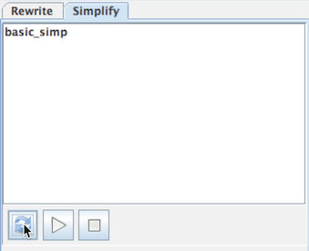
There it is, ready to go. Select basic_simp and click play:
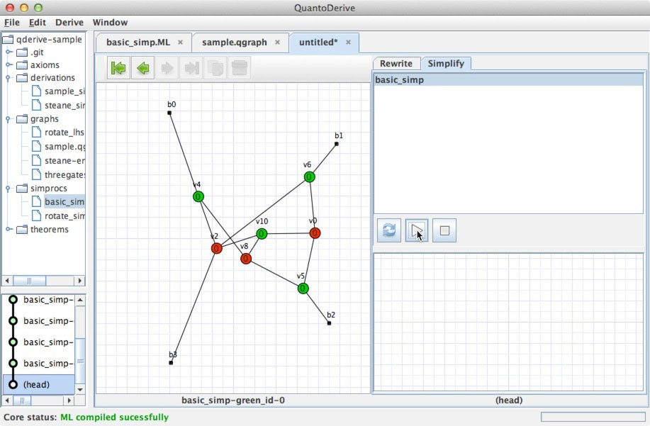
Well, that didn't get us very far. It is basic, after all. Go back to simprocs and open rotate_simp.ML and execute it. Now, back in our derivation, click the refresh button again and run rotate_simp.
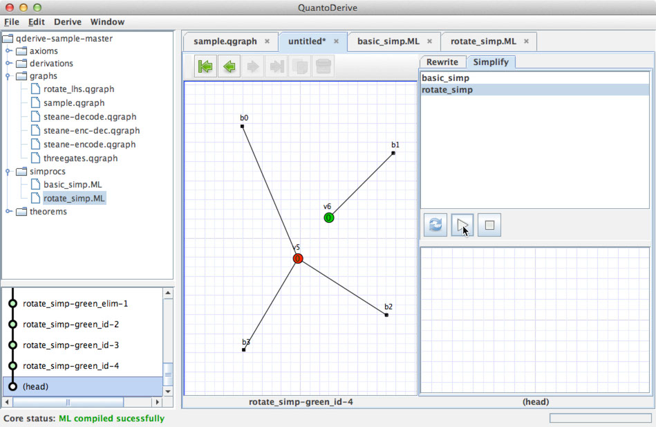
That's better! Of course, your results may vary depending on what nodes you added earlier.
So, that's pretty much all there is to it. Play around with creating some new rules or even a new project. We'll be rolling out support for more theories if and when there's a demand. Currently, we support ZX projects and GHZ/W projects, though this really only defines what the nodes look like.